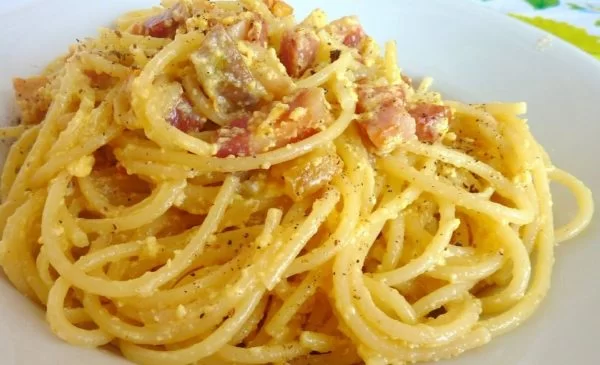

Home
Spaghetti alla carbonara

Avete voglia di qualcosa di gustoso da farvi leccare i baffi? Ecco la ricetta per voi!
Ci sono molte varianti e molte discordie, qui vi scriverò la mia ricetta (amici romani non odiatemi!)
Ingredienti:
- Spaghetti
- Uova
- Guanciale
- Pepe
- Parmigiano
E ora la procedura che seguo (copiando un po' anche da qualche chef)
- Portare a bollore l'acqua di cottura degli spaghetti.
- Quando arriva a bollore, con una mandolina mettere per un minuto (non di più!) il guanciale di modo che quando andremo a metterlo dopo nella padella sarà croccante fuori, ma morbido dentro
- Mettere a rosolare il guanciale SENZA olio, il grasso di cottura uscirà da solo!
- Preparare in una ciotola un uovo intero più un tuorlo per ogni commensale, parmigiano, pepe in abbondanza, sale e il grasso di cottura del guanciale
- Frustare energicamente fino a togliere qualsiasi grumo! Il risultato deve essere liscio!!
- A fine cottura della pasta, spegnere il fuoco, aggiungere il nostro preparato con le uova
- La carbonara, come l'omelette, vuole BAVOSA e non una frittata!
- Servire e leccarsi i baffi!